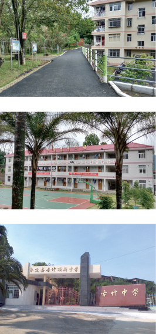
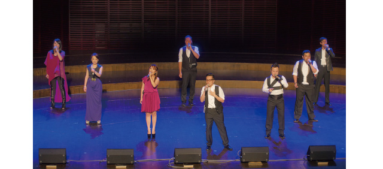
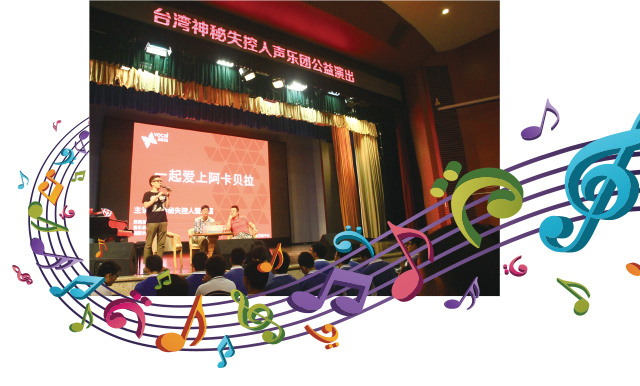

 福建省龙岩市永定区古竹顶新中学是顶新集团自1997年开始持续关怀的项目学校。 近20年的时间里，除了持续不断地为学校改善硬件设施，顶新集团还支持了许多学生活动。自2012年来，顶新公益基金会持续投入500余万元，帮助学校修建了运动场、学生宿舍、学生浴室、教师公寓、学生厕所等硬体设施，协助学校举行了运动会、图书节、篮球赛等活动，捐资更新了学校图书、课桌椅、体育用品等学生亟需的用品。 2017年4月，顶新公益基金会再次捐资27万元，帮助古竹顶新中学修缮了校园路面，并改造了学生宿舍的屋顶，使其在夏季能够以更好的状态服务就寝的学生。
多年来，顶新公益基金会一直致力于促进海峡两岸在文化、艺术、学术等层面的互动，以文艺之美为桥梁推动着海峡两岸的交流与沟通。基金会连续多年推动小众化的音乐类型----阿卡贝拉人声音乐活动的交流，支持台湾神秘失控、爵诺人声、蓝色警报等乐团在北京、上海、苏州、广州等城市巡演。
2017年4月，顶新公益基金会支持的「神秘失控人声乐团」“光阴故事”音乐会在深圳拉开序幕。今年的系列交流活动还将相继邀请包括台湾、美国及丹麦知名阿卡贝拉乐团参与交流演出及教学。
